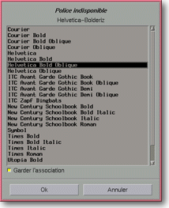

<!-- Documentation XQuad (c)1995-2000 AXENE contact axene@axene.org>
<html>

<head>
<title>Remplacement de polices</title>
</head>

<body BGCOLOR="#FFFFFF" BACKGROUND="Images/back.gif" TEXT="#000000">

<p ALIGN="right">  </p>

<p><br>
<br>
La boîte de remplacement de police peut apparaître lors du <a HREF="Menu_File.html#open_menu_entry">chargement d'un document</a> XQuad. Pour ce type de
fichier, il peut y avoir d'indiqué l'utilisation explicite de polices de caractères. Si
l'une de ces polices n'a pas d'équivalent dans XQuad, cette boîte s'ouvrira pour
demander d'établir cette équivalence. <br>
<br>
</p>

<hr>

<p align="center"><br>
 <br>
<small><i>Photo d'écran : Boîte de remplacement de polices. </i></small></p>

<p><br>
</p>

<hr>

<p><br>
</p>

<h3>Partie supérieure de la boîte de dialogue :</h3>

<ul>
  <li><a NAME="label">le label <i>&quot;Police Indisponible&quot;</i>. Ce label donne le <b>nom
    de la police à remplacer</b>, indiqué dans le fichier à lire et qui n'a pas trouvé
    d'équivalence dans les polices actuellement disponibles dans XQuad. </a><br>
    &nbsp;</li>
  <li><a NAME="font_list">la <b>liste de polices disponibles</b> dans XQuad. En selectionnant
    un élément de la liste, celui-ci deviendra la substitution de la police sans
    équivalence. Par défaut, la police d'XQuad ayant le nom se rapprochant le plus de la
    police à remplacer, sera sélectionnée. </a><br>
    &nbsp;</li>
  <li><a NAME="keep_button">le bouton poussoir <i>&quot;Garder l'association&quot;</i> permet
    de conserver la substitution de la police du fichier par une police d'XQuad, pour la suite
    de l'exécution. Ainsi, à chaque fois que la police indisponible sera rencontrée, la
    substitution avec la police d'XQuad sera automatique. </a></li>
</ul>

<p><br>
</p>

<h3>Partie inférieure de la boîte de dialogue :</h3>

<ul>
  <li><a NAME="button_ok"><i>&quot;Ok&quot;</i> permet d'<b>accepter le remplacement de la
    police</b> non disponible par une police existante dans XQuad et de continuer la
    chargement du fichier. </a><br>
    &nbsp;</li>
  <li><a NAME="button_cancel"><i>&quot;Annuler&quot;</i> <b>annule la substitution de police</b>
    et le chargement du fichier. </a></li>
</ul>

<p><br>
</p>

<hr>

<p ALIGN="right"></p>
</body>
</html>
